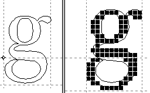

1996-02-29
 Nombro entjera aŭ egala
al la kvociento de du entjeroj. Vd pli formalan difinon algoritman (racionoj).
Nombro entjera aŭ egala
al la kvociento de du entjeroj. Vd pli formalan difinon algoritman (racionoj).
Angle: rational number
Ruse: рациональное число
1996-02-29
En Paskalo, prafunkcio liveranta kvadratan radikon de sia argumento: (rad(x))²=x.
Angle: Sqrt
1996-02-29
Ω En hierarkia dosiersistemo, la dosierujo kiu estas la radiko de la hierarkio.
Angle: root directory
Ruse: корневая
директория
2000-08-17
En senradika arbo oni povas nomumi radiko ajnan verticon, tiel ŝanĝante ĝin en radikhavan arbon. Precipe tiaj arboj estas uzataj en komputado. Vd orientita arbo, alradika arbo, elradika arbo.
Angle: rooted tree
Ruse: корневое дерево
1996-02-29
Vd radiksigno.
Angle: radical, radical sign
Ruse: радикал, символ корня
квадратного
1996-02-29
Angle: root
Ruse: корень
1996-02-29
« Signo √, per
kiu oni montras, ke de la nombro aŭ kvanto skribita sub ĝi oni konsideras
la radikon, kies indico troviĝas inter la
branĉoj de la V-parto»: ∛, ∜ [PIV1].
En komputado simila signo (Unikode 16u2713) ofte aperas kiel indikilo de validaj opcioj (vd markobutono), por kiu en diversaj naciaj lingvoj estas uzataj diversaj metaforoj: angle, «puŝeto»; ruse «(ŝvebanta) birdo, monedo»; france «noĉo»; germane «hoketo»; slovake «pipo».
Noto. PIV1 registras ankaŭ la formon radikilo.
Angle: radical sign; tick, check mark
France: coche
Germane: Häkchen
Ruse: птичка; галочка
Slovake: fajfka
1996-02-29
Ekrana butono kiu estas ano de grupo da reciproke ekskludaj (disaŭaj) butonoj; tio similas butonan bendoŝaltilon de radioricevilo: ŝaltante unu bendon oni aŭtomate malŝaltas la antaŭan. Ŝaltita radiobutono ofte estas bildigata per bulo. Ekz-e, oni povas demandi pri dezirata maniero prezenti la supersignitajn literojn de Esperanto:
Kp markobutono.Angle:
radio button, exclusive setting
France: bouton radio
Ruse:
кнопка-переключатель
1996-08-27
Algoritmo de interna ordigo kies tempaj kompliklimoj suba kaj averaĝa estas O(n⋅log n), dum la tempa kompliklimo supra estas O(n²); paradokse, la malpinta kompliko realiĝas por la okazo de datumaro kiu jam ordas.

Rim. Kp la algoritmon de piramida ordigo, kiu averaĝe laboras duoble pli longe ol la Rapida ordigo, sed kies averaĝa kaj supra kompliklimoj estas O(n⋅log n).
Angle: quicksort
France: Tri Rapide
Ruse: быстрая
сортировка
1996-02-29
Programo kaj speciala lingvo por printi datumojn en formo specifita de uzanto.
Angle: RPG, report(-program) generator
1996-02-29
Grafiko per rastrumo, kontraste al komposta grafiko aŭ vektora grafiko.
Angle: raster
graphics
Ruse: растровая графика
1996-02-29
Prezento de signobildo per rastrumo por surekranigo aŭ surpaperigo per nadlara printilo (vd ekzemplon pri rastrumaj signobildoj por tri literoj de Esperanto, Rastrumaj signobildoj).
Angle: dot matrix, pixel pattern
1996-02-29
Tiparo prezentita per rastrumaj signobildoj. Tia tiparo estas tute preta al printado aŭ surekranigo, sed ĝia skalado (ŝanĝo de la tipara grado) rezultigas aĉajn signobildojn. Kp kontura tiparo, vektora tiparo.
Angle: bitmap font
Ruse: растровый шрифт
1996-02-29
Malpleja elemento de rastrumo, al kiu estas atribueblaj koloro kaj heldenso (brilo).
Rim. Iuj opinias, ke «bildero» estas pli bona ĉar pli simpla. Jes, ĝi estas pli simpla — sed ankaŭ malpli ĝusta: ja ne temas pri ero de la bildo mem, sed pri ero de ties rastumigita prezento; unu sama bildo povas havi diversajn rastrumigojn (ĉe diversaj distingivoj) — kaj aliflanke, oni povas paroli pri rastrum(er)o sendepende je bildo (samkiel eblas paroli pri ekrano sendepende je bildo).
Angle: pixel (picture element)
2006-01-01
Speco de ciferecigilo, rimedo por transformi kontinuan prezenton de datumo (ekz-e signobildon de kontura tiparo) en diskretan rastrumon. Jen estas ekzemplo pri rastrumigo:

La kvalito de aŭtomata rastrumigo ne ĉiam estas kontentiga — tiam necesas «mana» polurado. Se la rastrumo havas kolorojn aŭ plurajn grizogradojn, oni povas apliki glatigon.
Angle: rasterizer, raster processor
Ruse:
растеризатор
1996-09-06
Prezento de bildo per matrico el punktoj (rastrumeroj), precipe se temas pri ekrano, desegnilo, printilo.
Noto. La termino uzeblas en tipografio, tekstilo.
Angle: bit map, raster
Germane: Raster (el la latinaj «raster, rastrum»)
Ruse: растр
1996-02-29
Ebligi pluan plenumon de procezo, precipe se ĝi antaŭe haltetis.
Angle: resume
Ruse: возобновить
1998-08-24
En MODULA, programparto (en formo de aparta dosiero), entenanta realigon de difinoj el sia realiga modulo.
Angle: implementation
module
Ruse: модуль реализации
1998-12-06
Angle: implementation
Ruse: реализация
1997-01-06
Komputado kies tempa kaj spaca kompliko malsuperas la eksponencialan — vd komplikteorio. Maldetale, temas pri subklaso de la primitive rekursiaj funkcioj.
Angle: feasible computation
1996-02-29
Reĝimo de datumtraktado en kiu la komputa sistemo interagas kun eksteraj procezoj en tempo komparebla kun la rapido de tiuj procezoj. Realtempa sistemo devas esti sufiĉe respondema al la eksteraj interrompoj kaj trovi tempon por priservi diversajn eksterajn disponaĵojn.
Angle: real-time operation (processing)
Ruse: режим реального времени
1996-02-29
Ĉiu el la sinsekvaj datumaroj, registritaj kiel enhavo de unu sama dosiero (ekz-e teksto modifita per redaktado kaj registrita sub tiu sama nomo, kiel la patra dosiero).
Noto. La Fundamenta vorto «redakcio» havas ĝuste la bezonatan signifon: «3 Stato de teksto; … ilia definitiva redakcio estos fiksita nur en la kongreso [Z]. Kp lego, varianto» [PIV1]; do, oni povus paroli pri pluraj redakcioj de programteksto, kiel oni parolas pri pluraj redakcioj de romano; tiu interfaka unuecigo kun la terminara filologia (aŭ presarta) ebligas distingadi inter redakcio kaj eldono (tiu lasta estas redakcio disponigata al la publiko); la diversajn adaptaĵojn al specifaj aplikoj aŭ konfiguraĵoj estus varioj de programara produkto. Tamen tre probablas, ke pro la premo de la angla venkos la neoficiala kaj malpreciza «versio».
Angle: version
Ruse: версия
1996-02-29
La ciklo de enigo, provlego, korektado, ŝanĝado de datumaro (teksta, grafika, bita).
Angle:
editing
Ruse: редактирование
1996-02-29
Angle: edit
Ruse: редактировать
1996-02-29
Programaro por redakti,1–2. Depende je la uzmaniero aŭ apliktereno povas temi pri specialcela redaktilo, grafika redaktilo, signostria redaktilo, ekrana redaktilo, aranĝilo, literumilo, tiparredaktilo (angle font editor), sintaksema redaktilo (strukturema redaktilo).
Angle: editor
Ruse: редактор
1996-02-29
 Enesto
de pluraj ekzempleroj de parto en elektronika aŭ meĥanika ekipaĵo, por ke
la ekipaĵo povu plu funkcii post paneo de parto.
Enesto
de pluraj ekzempleroj de parto en elektronika aŭ meĥanika ekipaĵo, por ke
la ekipaĵo povu plu funkcii post paneo de parto.
Noto. La formo redundo havas longan kaj firman tradicion, kaj fake (jam en [KKV], poste ankaŭ [Cab, MMES]), kaj komunlingve (ekz-e la artikolo «Abunde kaj Redunde» en la Literatura Foiro).
Angle: redundancy (redundant)
France: redondance
Hispane: redundancia
Ruse: избыточность
1996-02-29
Apriora datumtipo en multaj programlingvoj. Fakte en la
komputilo prezenteblas nur finia nombro da reeloj (racionoj), kaj la programisto devas zorgi pri konvenaj precizo kaj prezentomaniero: ĉu por liaj kalkuloj
pli taŭgas fikspunkta prezento
(ebliganta limigi la absolutan eraron),
aŭ glitpunkta prezento (garantianta
iomon da fidindaj ciferoj, do, limiganta la relativan eraron). Tiajn detalojn la programisto
povas regi en FORTRAN, PL/I, Ada; en Paskalo oni
devas kontentiĝi pri unu sola enkonstruita reela tipo. Super la reeloj en
Paskalo disponeblas la operacioj «+», «-»,
«*» (multipliko), «/» (dividooperacio), la prafunkcioj abs, eksp, kvad, kos, ln, rad,
ronde, sin, tanArk, trunko kaj la praproceduroj legu, leguLin, skribu,
skribuLin. Ekzemploj pri reelaj literaloj:
3.14159 { proksimume pi }
2.998e8 { t.e. 2.998×100000000 }
Angle: real
Ruse: вещественный
1996-02-29
En la esperantigitaj MODULA kaj Oberono, rezervita ŝlosilvorto, prezentanta elirejon el proceduro.
Angle: return
Ruse: возврат
1996-02-29
Malfari malfaron, t.e. reveni al stato de la redaktata datumaro kiu estis antaŭ koncerna malfarokomando.
Angle: redo
Ruse: накат
1996-09-16
Datumtipo kies valoroj estas referencoj. Por plibonigi la tipkontrolon, la difino de referenca tipo en Paskalo nepre determinas per tipnomo la «komponantan» datumtipon de eventualaj referencatoj:
referenca_tipo = "↑" tipnomo.
Angle: pointer
type
Ruse: тип указателя, ссылочный тип
1996-02-29
∏ En Paskalo, speco de variablo, indiko de objekto per referenco (kp elreferenci):
referencato = variablo "↑".
Tiu sintakso implicas, ke la variablo (la referenco) havas referencan tipon.
Angle: referenced variable
Ruse:
указуемая переменная
1996-02-29
 «Ĉiu el la signoj,
per kiuj oni referencas (§, °, †, *)» [PIV1].
«Ĉiu el la signoj,
per kiuj oni referencas (§, °, †, *)» [PIV1].
La plej internacia maniero sendi al piednoto estas uzi la numeron de la noto (en krampoj aŭ, se eblas, en formo de supra indico). Tamen laŭ la tradicio Okcidenta oni ankaŭ uzas specialajn signojn; jen estas la 9 unuaj referenciloj laŭ Lateĥo:
Angle: reference mark
Ruse: знак ссылки
1996-09-26
∏ Variablo kies valoro estas interna nomo (la adreso) de alia variablo. En Paskalo referencoj estas variabloj apartenantaj al iu el referencaj tipoj. Ĉiuj referencaj tipoj havas unu komunan konstanton, la nulan referencon (simbolatan de NUL en Paskalo), kiu referencas fikcian, neekzistantan objekton.
Rim. La programlingvo C++ distingas du specojn de referencoj, unu el kiuj (la pli limigita) angle estas nomata reference. Oni povus uzi por ĝi la terminon kromnomo.
Noto. Kutime «referenco» implicas iom pli altnivelan rimedon ol «montrilo». En Esperanto ĝi preferindas por malplioftigi la il-vortojn.
Angle:
pointer, reference
Ruse: указатель, ссылка
1996-02-29
Vd ĉe rilato.
Angle: reflexive
Ruse:
рефлексивный
1996-02-29
Estu R duloka rilato super aro A; rilato R′ estas refleksiva transita fermo de R SSE
Angle: reflexive transitive closure
Ruse:
рефлексивное транзитивное замыкание
1996-02-29
Likvakristala ekrano sen fonlumo, en kiu la bildo estas vidigata per reflektata lumo; tia ekrano plej konvenas al uzo en situacioj kie abundas sufiĉa ekstera lumo aŭ estas uzata frontlumo. Kp traluma ekrano.
Angle: reflective display
2002-09-03
Kp administrado, direktado, stiri.
Angle: control, management
Ruse: управление
1996-02-29
Parto de
matematika (precipe logika) formulo, en kiu variablo estas ligita de kvantoro, lambdo-operatoro ktp (vd ligita variablo); ekz-e en la sekvaj
formuloj la ligregionoj de x estas markitaj per substreko:
(∀x) P(x) ∧ Q(x)
(∀x) (∃y)[P(x,y)|Q(y,x)] ∧ (∃z)P(z,x)
 (Regiono de nomo, de deklaro:) en programlingvoj, tiu parto de la
teksto de programo, kie validas deklaro de nomo (precipe de nomo de loka objekto) kaj kie oni rajtas uzi la nomon
laŭ tiu deklaro. Kp bloko, modulo, vivdaŭro,
nomkonflikto.
Malfermita
aro koneksa.
(Regiono de nomo, de deklaro:) en programlingvoj, tiu parto de la
teksto de programo, kie validas deklaro de nomo (precipe de nomo de loka objekto) kaj kie oni rajtas uzi la nomon
laŭ tiu deklaro. Kp bloko, modulo, vivdaŭro,
nomkonflikto.
Malfermita
aro koneksa.
Noto. Simila nocio en ALGOL-68 nomiĝas angle scene, scenejo. Laŭ la franca portée oni povus provi «trafareo»n [PIV1], kiu estas termino fizika, sed ni preferis vorton pli simplan:
«region*o … 3 (Figursence:) Sfero, kampo de efiko de aferoj, prezentanta ian specialan econ» [PIV1].
Angle:
scope, visibility region
Ruse: область действия,
область видимости (определения
идентификатора)
1996-02-29
Ω En Vindozo-32, malgranda hierarkia datumbazo en kiu Vindozo tenas diversajn agordaĵojn (operaciumajn kaj aplikaĵajn).
Noto. Fakte, la (Uson-)angla registry signifas ĉi tie simple «registro»n, kaj la Usona vortaro [CEED] tradukas ĝuste: «registro, listo, matrikulo». La saman sencon havas la rusa termino. Tamen la traduko «registrejo» jam havas tradicion en Esperanto, ĝi helpas iom malŝarĝi la vortbazon «registr-», kaj la streĉo ne estas tro granda: oni ja uzas «lernejo»n por la institucio, ktp.
Angle: registry
Ruse: реестр
1999-03-27
1996-02-29
Noto. PIV1 atribuas tro multe da signifoj al tiu radiko; por komputado, la 3a estas nepraĵo, la ceterajn ni preferas esprimi alimaniere.
1996-02-29
Angle: fold case
1998-11-22
Rim. Oni skribas, ekz-e, Alt+Stir+u por indiki samtempan premon sur la alternativan registrumon, stirregistrumon kaj la literan klavon u; Alt+Stir+U implicas krome, ke samtempe estas premata la ĉefregistrumo (pro la ĉeflitera formo de la litero).
Noto. La apliko de la vorto «registrumo» por la koncernaj nocioj estas motivita per la tradicioj rusa kaj muzika (orgena, akordiona registrumo); kaj la sufikson -um, kaj la proksiman signifon oni trovas en la Latina registrum campanæ («ŝnuro de sonorilo», el kiu devenas la koncerna signifo muzika).
Paronimoj: reĝistro; registri.
Simono Pejno en sia Ĉapelilo uzas proksimsencan neologismon «uskleco».
Angle: shift (key), case
Ruse: регистр
1996-02-29
Angle: case sensitive
1998-11-22
Angle: smash case
1998-11-22
Estu signaro S kaj finiaj formalaj lingvoj
L, L₁, L₂⊆S*. Tiam oni konsideras la operaciojn
Rim. Unue la regulaj esprimoj (kaj la angla termino) aperis meze de la 1950aj jaroj en verkoj de Stephen Cole Kleene kiel rimedo por facile manipuli «regulajn arojn», priskribatajn per finiaj aŭtomatoj. [S.C. Kleene. «Representation of events in nerve nets and finite automata» // Automata Studies. Princeton, 1956].
Angle:
regular expression
Ruse: регулярное выражение
1998-03-11
Lingvo difinebla per regula esprimo; estas pluraj aliaj ekvivalentaj difinoj de tiu lingvoklaso, ekz-e «la lingvo akceptata de finia aŭtomato», «lingvo generata per dekstre lineara gramatiko» — vd hierarkio laŭ Ĉomski.
Angle: regular language
Ruse:
регулярный язык
1996-02-29
Serĉa (kajaŭ genera) ŝablono en multaj tekstaj redaktiloj kaj dosieradministriloj. La esprimilaro de la realaj traktiloj esence ekvivalentas al la teoria, sed estas pli oportuna por la praktiko (la uzeblo de ĵokeroj, intervaloj de bazaj signoj, nevideblaj signoj ktp). Ekz-e en la serĉoŝablonoj de Emakso oni povas uzi jenajn metasimbolojn:
| . | ajna signo (krom la linifinilo) |
|---|---|
| * | 0 aŭ pli da aperoj de la ĵusa signo aŭ simpla regula esprimo |
| + | 1 aŭ pli da aperoj de la ĵusa signo aŭ simpla regula esprimo |
| ? | ne pli ol 1 apero de la ĵusa signo aŭ simpla regula esprimo |
| […] | ajna signo el la signoaro; ekz-e la «nomeroj» [a-zA-Z0-9_] (kp \w) |
| [^…] | komplemento, ajna signo el ekster la indikita signoaro, ekz-e «necifero» [^0-9] |
| ^ | linikomenco; ekz-e ^um kongruas kun um aperanta komence de linio |
| $ | linifino (simetrie al ^) |
| \ | la tujsekva metasigno prezentu sin mem (ne traktu ĝin metasence), ekz-e
\\ \^ \$;
ankaŭ kelkaj metakombinoj: \t \n \( \| \) ktp |
| \(…\) | simpla regula esprimo; traktu la enkrampigitajn regulajn esprimojn kiel unu tuton |
| \| | alternativo: la ĵusa disaŭ la tuja regula esprimo |
| \< | konsideru nur vortkomencan kongruon; ekz-e \<an kongruas kun ansero sed ne kun banano. |
| \> | konsideru nur vortfinan kongruon; ekz-e 01\> kongruas kun 1001, sed ne kun 1010. |
| \w | ajna signo uzebla en vorto (en nomo de variablo ktp, laŭ la kuranta sintaksa difino) |
Kun tiaj konvencioj oni facile povas fari, ekz-e, regulan esprimon por trovi parentezon:
Angle:
regexp, regular expression
Ruse: регулярное
выражение
2000-03-16
Funkcimaniero.
Ekz-e stapla reĝimo, dialogo, tempopartigo, realtempa reĝimo; konektite, senkonekte (aŭtonome); ĉefreĝimo, kromreĝimo en Emakso; reĝimklavoj (Nomoj de reĝimklavoj) de klavaro.
Noto. «reĝimo
… 3 La kondiĉoj, karakterizantaj la funkciadon de maŝino
aŭ aparato aŭ cirkvito en difinita momento» [PIV1].
Angle: mode
of operation
Germane: Betriebsart, Modus
Ruse: режим
1996-02-29
Angle: unbounded register machine, URM; random-access machine, RAM
1996-02-29
Peco de la interna memoro de komputilo aŭ adaptilo, kutime havanta la kapaciton de unu memorvorto, uzata por diversaj specialaj celoj (precipe por teni la kurantan valoron de operando aŭ ĝian adreson). Disde ĉelo de la ĉefmemoro la reĝistroj diferencas per pli rapida kaj lakona atingeblo; tamen la nombro de reĝistroj kutime estas negranda (sed vd komandeta arkitekturo).
Vd bazreĝistro, indicreĝistro.
Noto. PIV1 donas por tiu signifo:
registro 4En la literaturo troveblas ankaŭ tiusenca registrumo, vorto al kiu ni atribuas alian signifon. Registro estas nepre evitenda pro la konfuzo kun «registraĵo», «registrado».
Angle: register
France: registre
Pole: rejestr
Ruse: регистр
1996-02-29
Profesoro pri matematiko ĉe la Universitato de Oslo, Norvegio. Naskiĝis en 1908. Aŭtoro de matematika terminaro [Rei87], kontribuinto al la matematika terminaro de PIV1.
1996-02-29
«Kvociento
de du nombroj aŭ de du samspecaj grandoj» [Rei87].
Noto. La formo «rejŝo» imitas la prononcon de sia angla ekvivalento. Ekz-e «disponeblorejŝo», ŝarĝorejŝo, trafrejŝo.
Angle: ratio, rate
Ruse: коэффициент, доля
1996-08-31
 Ajna el la diversaj
reklamaj rimedoj, uzataj en la Reto; precipe la reklamrubandoj, kroĉataj de portaloj al la TTT-paĝoj aŭ forumaj afiŝoj.
Ajna el la diversaj
reklamaj rimedoj, uzataj en la Reto; precipe la reklamrubandoj, kroĉataj de portaloj al la TTT-paĝoj aŭ forumaj afiŝoj.
Angle: banner
2002-11-02
Striforma reklamilo sur TTT-paĝo aŭ fine de foruma afiŝo.
Angle: banner
2002-11-02
Tia adresado, ke la adresparto de komando entenas absolutan adreson de koncerna memorparto (ekz-e adreson de pordo).
Angle: direct
addressing
Ruse: прямая адресация
1998-11-01
Tipara fasono en kiu la vertikala akso de la
literoj estas orta al la linidirekto. Magran rektan fasonon oni kutimas
rigardi ordinara kaj la plej facile legebla, do oni uzas ĝin por komposti la
plej grandan parton de la teksto. En tradicia tipara familio rekta fasono estas la baza
fasono, el kiu pli-malpli aŭtomate estas deriveblaj la ceteraj fasonoj. En
la familio Computer Modern estas kvar rektaj fasonoj: la (magra)
klasika (kiu pleje respondas al la rolo de la baza fasono por tiu familio, vd
klasika fasono), la dika, la senserifa kaj la tajpeska.
Noto. PIV1 mencias: «rektaj tipoj (kontraste al kursivaj)».
Angle: roman, upright
Germane: gerade(stehende)r Schriftschnitt
Ruse:
прямое начертание
1996-02-29
Ω En Unikso, ĉiu el la dosierujanoj indikantaj unu saman Uniksan indeksnodon. Kroman rektan ligilon oni kreas per la komando
Rim. Fakte «rekta ligilo» ne estas speco de dosiero, sed la normala maniero rilatigi datumaron al ĝia simbola nomo. Tamen kutime oni uzas tiun terminon se estas pluraj tiaj ligiloj, kaj iun el ili oni ial rigardas «kroma».
Angle:
hard link
France: lien direct
Ruse: жёсткая связь
1998-07-08
Ordinara ortograma matrico, kontraste al pli specialaj triangula matrico, rubanda matrico, kvadrata matrico ktp. Kp densa tabelo.
Noto. Ankaŭ la nacilingvaj terminoj iom konfuze proksimas al «orta matrico».
Angle: rectangular matrix
Germane: rechtwinklige Matrx
Ruse:
прямоугольная матрица
1998-08-31
Speco de paragrafo-signo ¶, disponebla en Unikodo kaj en la Latina-1 ĉe la kodono 16uB6 (tiun kodlokon en la
Latina-3a okupas la litero ĥ). Tiu formo de paragrafsigno ŝajnas
malpli internacia ol la kurba paragrafo
(ekz-e nur la kurba paragrafo disponeblas en la Latina-2a, Latina-3a, ISO-8859-5 ktp). En tekstaj redaktiloj la rekta paragrafo ofte estas uzata por
surekranigi alineo-finilon (tial la rusa nomo:
«alinesigno», kaj la terminopropono aline-signo [BT]).
Vd referencilo.
Angle: pilcrow
Ruse: знак абзаца
1996-09-30
Vd konektite.
1997-06-11
Linia listo por kiu enmetoj estas eblaj nur en la komencon, kaj la depreno nur de la fino (do, oni ĉiam deprenas la plej frue registritan objekton el la ankoraŭ ne deprenitaj).
Ekzemplojn vd ĉe dormema frizisto kaj larĝiĝema trairo. Ankaŭ la duktoj en Unikso estas rektvica memoro.
Angle: queue, FIFO, FIFO stack
Ruse:
очередь
1996-02-29
Maniero prezenti desupran analizon en formo de kolekto de rekursiaj proceduroj, tiel ke al ĉiu sintaksa variablo (aŭ regulo de la gramatiko de la analizata lingvo) respondas po unu tia proceduro. Ekz-e la proceduro postmetu (vd Ekzemplo pri rekursia desupriĝo) faras tian analizon por la esprimoj de simpla modela lingvo.
Angle: recursive descent
Ruse: рекурсивный
спуск
1996-02-29
Maniero matematike difini la nocion de komputeblo, pli aritmetika ol la ceteraj
metodoj (kp ekz-e Turinga aŭtomato).
Per aritmetikigo oni povas redukti ajnan klason de konstrueblaj objektoj al la entjeroj, tial rekursiaj funkcioj estas difinitaj kiel funkcioj kun argumentoj el ℕ kaj ĵetantaj en ℕ.
Rekursiaj funkcioj estas ieaj funkcioj, tion emfazas la ofta sinonimo parta rekursia funkcio. Se rekursia funkcio estas difinita sur la tuta ℕ, oni nomas ĝin ĉiea (aŭ totala) rekursia funkcio.
Rim. Historie, la termino «rekursia funkcio» aperis en metamatematiko (verkoj de Dedekind, Gödel) kun tiu signifo, kiun en la moderna literaturo oni atribuas al «primitive rekursia funkcio», kiu lasta efektive signifas esence «rikura funkcio». Baldaŭ evidentiĝis, ke estas ankaŭ aliaj (kaj eĉ ĉieaj) komputeblaj funkcioj, por kies algoritma difino necesas senbara serĉo aŭ simila rimedo. Tiun pli larĝan (do, pli «ĝeneralan») klason iuj nomas «la ĝenerale rekursiaj funkcioj»; pli ĝusta sed bedaŭrinde preskaŭ neuzata estas la termino µ-rekursia funkcio.
Angle:
recursive function
Ruse: рекурсивная функция
1996-02-29
Apero de programlingva frazo (precipe proceduro, iteracio, bloko, makroo, ordono) en alia samspeca frazo; do, speciala okazo de arbo. Por sintaksa difino de rekursia ingado oni uzas rekursiajn derivregulojn. Vd ingadnivelo, ingitaj iteracioj.
Noto. Pri nestado vd ĉe ingado.
Angle: nesting
France: emboîtement
Germane: Schachtelung
Ruse: рекурсивная
вложенность
1996-02-29
Proceduro dum kies plenumo okazas voko al ĝi mem — aŭ per senpera sinvoko (ekz-e F ĉe Faktorialoj), aŭ nerekte, kiel ĉe rekursia desupriĝo (vd Ekzemplo pri rekursia desupriĝo).
Angle: recursive procedure, recursive subroutine
Ruse: рекурсивная процедура
1996-02-29
Aro A estas rekursie generebla aro, se ĝi estas vakuo aŭ se ekzistas ĉiea funkcio rekursia kies variejo estas A. Do, aro estas rekursie generebla aro se ekzistas algoritmo por konstrui (komputi, listigi, eventuale kun ripetoj) ĉiujn ĝiajn elementojn.
La rekursie genereblaj aroj estas la «supra limo» de ĉiuj aroj difineblaj per algoritmo. Ĉiu decidebla aro estas rekursie generebla; sed rekursie generebla aro estas decidebla nur se ankaŭ ĝia komplemento estas rekursie generebla aro; kaj ekzistas nedecideblaj rekursie genereblaj aroj. Tial oni povas rigardi la nocion de rekursie generebla aro formaligo de la intuicia koncepto pri komputebla aro.
Angle: recursively enumerable set
Ruse:
рекурсивно перечислимое множество
1996-02-29
Ofte rekursio ebligas koncizan kaj klaran solvon de komputaj problemoj, precipe kiam la donita problemo estas malkomponebla en plurajn subproblemojn, similajn al la origina (vd dividu kaj regu). Verkante rekursian algoritmon (ekz-e por la problemo pri la Hanojaj turoj) oni devas
Rim. En iteracio, ĉiu el la ripetataj stadioj de la algoritmo finiĝas antaŭ ol komenciĝas la sekva, dum en rekursio la ripetaĵoj eningiĝas; sekve, la komenca (la plej «ekstera») ne povas finiĝi antaŭ ol finiĝos ĉiuj enaĵoj.
Pri konfuzo inter rekursio kaj rikuro en metamatematiko vd sub rekursia funkcio.
Noto. Kvankam «rikuro» estas vorto pli bela, «rekursio» estas absolute internacia. Malkonfuzi la signifojn de tiuj terminoj ofte estas afero senespera (ĝuste la misuzoj estas tre internaciaj: rekursia proceduro, rekursia difino, rekursia strukturo).
Iuj uzas rikuron se temas pri iteracio, kaj rekursion okaze de procedura memvoko (vd Faktorialoj). En la franca tradicio rikuro havas la sencon de la angla induction.
Iuj uzas la adjektivan radikon «rekursiva»; tio evitindas pro la false sufiksa -iv. Krome, «rekursio» facile adjektiviĝas, dum el «rekursiva» malfacilas fari same naturan substantivon.
Angle: recursion, recursive
Ruse:
рекурсия, рекурсивный
1996-02-29
En komputila reto, aranĝaĵo plenumanta
regeneradon de datumpakaĵoj inter (partoj de unu sama aŭ diversaj) retoj.
Relajso servas por geometrie pligrandigi la reton, elektre sendependigi ties
partojn. Iam «relajso» implicas la eblon de provizora konservado de la pakaĵoj (kontraste al «realtempa» ponto).
Angle: repeater, relay
Ruse: повторитель; ретранслятор
1996-02-29
Tia adresado, ke la adresparto de komando entenas relativan adreson. Normale komputilo kalkulas faktan adreson de la operando adiciante la nombron, donitan en la adresparto de la komando, kun la kuranta valoro de adresreĝistro; tia adiciado kostas neniom, kaj estas provizata speciale por realigi la relativan adresadon.
Speciale: indichava adresado, bazhava adresado.
Angle:
relative addressing
Ruse: относительная
адресация
1998-11-01
Adreso indikita per deŝovo rilate al baza adreso, ekz-e kiel indico de tabelo aŭ kampo de rikordo. Kp absoluta adreso.
Angle:
relative address
Ruse: относительный адрес
1998-11-01
Ω En programado por hierarkia dosiersistemo, dosierindiko kun la vojprefikso ekde konsiderata dosierujo (ekz-e ekde la kuranta dosierujo). Kp absoluta dosierindiko.
Angle: relative pathname
Ruse:
относительное имя файла
2000-08-17
En nombra kalkulo, mezurado ktp, la absoluta eraro dividita per la absoluta valoro de aproksimaĵo; se nombron
x oni aproksimas per a,
tiam la relativa eraro estas |a−x| / |a|.
Angle:
relative error
Ruse: относительная
погрешность
1996-02-29
Angle: relocatable
Germane: Verschieblich
France: translatable
Ruse: перемещаемый
1996-02-29
Enŝovi spacetojn en tekston por doni deziratan formon al
la tekstorando (precipe por alkadrigo).
Angle: quad, justify
Ruse: разогнать
(строки), выключить (текст)
1996-08-25
En Ada, altnivela esprimilo por aranĝi komunikadon kaj sinkronigon de paralelaj procezoj. Rendevuo okazas inter du procezoj, unu el kiuj rolas kiel kliento faranta mendon al la alia, serva procezo. Tia mendo entenas indikon de la servonto, la nomon de tiu enirejo (angle entry) de la tasko priskribanta la servan procezon, kiu responsas pri la koncerna servo, kaj eventuale, la faktajn parametrojn por la datuminterŝanĝo. Prezentinte sian mendon, la kliento haltetas atendante ĝian priservon (eblas precizigi, kiom longe la kliento pretas atendi antaŭ ol rezigni la servon). Kiam la servanto atingas la rendevuan traktilon, ĝi plenumas iun el la mendoj, vicatendantaj ĉe la koncerna enirejo — kaj ĝuste tio estas nomata rendevuo, — aŭ, se la atendovico estas malplena, atendas estiĝon de mendo (ankaŭ por la servanto oni povas aranĝi diversajn atendomanierojn). Por la kliento rendevuo aspektas tre simile al procedurvoko, en la serva tasko la enireja akceptoordono similas eneligon. Ekzemplon vd sub problemo pri la mortemaj manĝantaj filozofoj.
Angle: rendezvous
Ruse: рандеву
1996-02-29
«1 Raporto [t.e. rejŝo — S.P.] inter la utila laboro ricevita de maŝino
kaj la energikvanto elspezita: altrendimenta motoro…» [PIV1].
Kp efikeco.
Angle: efficiency, performance
France: rendiment
Germane: Wirkungsgrad
Ruse:
эффективность, производительность
1996-02-29
En datumbazoj kaj komputilaj retoj, la agoj por krei kaj varti duplikaton de datumbazo aŭ dosiersistemo en alia komputilo, kiu ofte estas servilo. Replikado kutime implicas racian kopiadon de ŝanĝitaj partoj dum ĝisdatitgo. Kp spegulo.
Angle: replication
1999-03-11
En forumo, afiŝi respondon
(kontraste al retletera respondo al difintaj personoj). Respondafiŝo
referencas la afiŝon al kiu ĝi rilatas, tiel ke la novaĵlegilo povu aranĝi temfadenojn laŭ la ordo logika, sendepende je la
ordo en kiu ĝi ricevas afiŝojn.
Angle: followup
1999-03-21
Reta dokumento en formo de dosiero aŭ hiperteksto, disponebla en forumo kaj celanta respondi demandojn kiuj ofte interesas novajn legantojn. Pri la dokumento zorgas volontuloj, kiuj regule afiŝas ĝin (aŭ ĝian adreson) en la forumo. Antaŭ afiŝi demandon en forumo oni konsultu la respondaron por ne ĝeni aliajn legantojn per trivialaĵoj.
La respondaroj regule aperas ankaŭ en la novaĵgrupoj comp.answers, news.answers kaj alt.answers.
Multaj respondaroj troveblas ĉe ftp://ftp.kiae.su/internet/faq/.
Respondaroj pri Esperanto:
http://www.esperanto.net/veb/sce.html,
http://www.esperanto.net/veb/faq.html,
http://www.geocities.com/Athens/Acropolis/1091/ROD.HTM.
Angle:
frequently asked question, FAQ, FAQ list
France: FAQ, Foire aux questions
Ruse: ЧаВО
(ЧАстые Вопросы и Ответы)
1997-07-21
En dialogo, la tempo (kutime, mezuma) inter enigo de komando kaj ricevo de respondo (rezulto, rifuzo ktp).
Angle: response time
Ruse: время отклика
1996-10-13
«Eksdosiero» (vd vicrisurco), kopio de dosiero destinita por uzado okaze de eventuala difektiĝo de la ĉefekzemplero de la dosiero, aŭ por malavanci al antaŭa kohera stato okaze de uzula eraro.
Ekz-e Emakso, antaŭ ol unuafoje (dum seanco) konservi ŝanĝitan dosieron hello.c, konservas ĝian antaŭseancan staton en la dosiero hello.c~. Kp aŭtokonservado.
Angle: backup
file, recovery file, benchmark
Ruse: дубль
1999-09-12
Ĉe entjera divido
a DIV b, la entjero r tia, ke
a = (a DIV b)+r. En multaj programlingvoj la koncerna operacisimbolo estas MOD.
Angle: remainder
France: rest
Germane: Rest
Ruse: остаток
1996-02-29
Ω Denova startigo de procezo aŭ komputilo, precipe denova praŝargo de la operaciumo kaj startigo de ties komencaj procezoj, post perdo de funkciivo sekve de eraro, por havigi al la stato de la komputada medio kutimajn aŭ nove difinitajn valorojn. Vd malvarma reŝargo, varma restart(ig)o.
Angle:
reset, reboot
Ruse: перезагрузка
1996-02-29
Oni uzas ret- prefiksece por
indiki ke koncerna aĵo rilatas al malloka komputila reto, precipe al la Interreto: retpoŝto, retkomerco, retbutiko, retgazeto ktp.
Angle: e-, electronic
2003-04-23
Parto de la septavola etalona modelo (vd tie).
Angle: network layer
Ruse: сетевой уровень
1996-02-29
Signoĉeno uzata en komputila reto por indiki komputadan
objekton kaj komputilon (poŝtejon); vd retpoŝta adreso, Internet-adreso, URL.
Angle: Internet address, URL, e-mail address
1999-10-30
Angle: netter; netizen
France: internaute
Ruse: сетянин
1996-02-29
 ret·ej·o
ret·ej·o TTT-ejo aŭ TTT-paĝaro.
Rim. Termino uzata, sed evitinda, ĉar reto estas nocio multe pli ĝenerala ol TTT; se oni volas paŭsi la anglan Web site, oni prefere diru «teksejo». Krome, kp retumejo.
2003-07-09
¤ Komercado
per la Reto. Ekz-e aĉetado de varoj per bitmoneroj.
Angle: e-commerce
Ruse: электронная коммерция
2000-03-19
Mesaĝo sendita per komputilreta
poŝto.
Angle: (piece of) e-mail
1996-02-29
La reguloj por
konduto en la reto, speciale en forumoj; ekz-e vd ĉe disafiŝi.
Angle: netiquette
1996-06-14
En la
Interreto, ajna adresebla komputilo konektita
al la reto (cetere, iuj distingas «retnodo»n disde «enkursigilo» — vd ĉe kluzo). Vd ankaŭ FTP-ejo, TTT-ejo.
Angle: host, node
Ruse: узел
1997-08-02
[Jel, Pfei] Kolekto de
ekipaĵoj interligitaj per datumtransmetaj kanaloj. Depende je la funkcio de reto oni povas distingi komputilajn retojn kaj
datumtransmetajn retojn. Oni ofte diras «la reto», kun la difina
artikolo, parolante pri la tuto de interkonektitaj komputilaj retoj, kiuj
kune agas kvazaŭ unu grandega reto (aŭ «Retlando», kp retano, la Interreto).
En grafeiko, iom loza preskaŭtermino, kies
proksimuma signifo estas «koneksa direkta
grafeo kun markaĵoj» (ekz-e Petri-reto,
semantika reto); iuj aŭtoroj atribuas al
ĝi la signifon de hamako.
Angle: network, net
France: réseau
Ruse: сеть
1996-02-29
Interreta speco de kodrompisto.
Angle: cracker
2000-07-07
Signoĉeno uzata en komputilreta poŝto por unike identigi
uzanton kaj komputilon (poŝtejon). Ekz-e
samideano@iis.nsk.su
Angle: e-mail address
Ruse:
электронный адрес
1996-02-29
Angle:
e-mail
Ruse: электронная почта
1996-02-29
En la Interreto, la plej ekstera domajno (ne entenanta en alia domajno).
Gravaj Usonaj retregionoj estas edu, com, gov, mil, org — por resp. edukaj, komercaj, registaraj, armeaj aŭ aliaj institucioj (koncerna retnodo povas situi ekster Usono); sed normale retregionon indikas dulitera mallongigo de landnomo, ekz-e .br (Brazilo), .su (eks-Sovetio), .ru (Rusio) ktp. Teorie la pinta domajno .us entenas 50 subdomajnojn respondajn al la 50 subŝtatoj (kies nomoj identas kun la paperpoŝtaj duliteraj mallongigoj), sed praktike tiuj estas malofte uzataj.
Angle: top-level domain
1999-01-13
Estu disĵeto f el
A sur B-on; ĝia retroĵeto estas tia ĵeto g: B→A, ke
g(y)=x ⇔ f(x)=y
Angle:
inverse function
Ruse: обратная функция
1996-02-29
1996-02-29
Askia stirsigno 8 (BS) kies originala signifo estis [IFIP71]:
movi rubandon (magnetan, trurubandon) je unu paŝo (resp. je unu bloko, je unu truvico) malantaŭen; malfari la avancadon de printila ĉareto post la printado de vica signo por ebligi la printadon de kunmetaĵo, ekz-e de substreko aŭ ĉapelita litero.Tiun signifon plu retenas la printiloj, dum ĉe la enigaj klavaroj retropaŝo kutime efikas kiel eksiga signo (ĝi forviŝas la signon situantan maldekstre de la kursoro).
Angle: backspace, BS
France: effacement arrière
Germane: Schritt zurück
Pole: cofacz
Ruse: ВШ, возврат на шаг
1996-02-29
Esploro de ekzistanta produkto por determini ĝiajn komponantojn kaj iliajn interrilatojn, celanta rekrei la produkton en alimaniere aŭ ĝin prezenti en pli abstrakta formo; ofte farata por plibonigi la vartadon de la produkto, aŭ fari ĝian klonon sen la projekta dokumentaro.
Angle: reverse
engineering
Ruse: воспроизведение
1997-11-01
Traduko el malpli strukturema kajaŭ malpli esprimiva programlingvo (ekz-e el maŝinlingvo) en pli altnivelan programadan lingvon. Retrotraduko povas servi diversajn celojn: unuecigo de programprezento por programaro kies partoj estas verkitaj en diversaj programlingvoj; dokumentado kaj adaptado de ŝtelita programaro, kies fontteksto mankas; apliko de ilprogramoj, disponeblaj nur por programlingvo alia ol tiu, en kiu estas verkita la koncerna programpeco ktp. Kp tradukilo.
Angle: decompilation; disassembly
France: désassemblage
Germane: Aufwärtsübersetzung
1996-02-29
Persono kiu retumas.
Angle: cybernaut, internaut
2003-12-10
Servo
ebliganta al la klientoj atingi la Reton per publika terminalo por retumi, precipe en kafejo, hotelo aŭ publika biblioteko;
kaj la ejo kie tia servo funkcias.
Angle: cyber café, Internet café
2003-07-09
Iel ajn
uzi la Interreton: por laboro aŭ amuzo; retpoŝte, per FTP, diskutante
en forumo, foliumante aŭ verkante TTT-paĝojn ktp.
Angle: surf, cruise
1999-10-25
Programa rimedo por retumi; ekz-e Navigilo, Esplorilo, Linko ktp.
Angle: ??
1999-10-25
Adreso indikanta la lokon en la vokanta parto de la programo. Revenadreso estas registrata en reĝistro aŭ sur la stako kiam proceduro estas vokata.
Angle: return address
Ruse: адрес возврата
1996-02-29
En pluraj programadaj lingvoj (FORTRAN, C, Ada, MODULA, Oberono) — ordono servanta por ĉesigi la plenumon de proceduro aŭ funkcio. En tiu dua okazo la revenordonon devas akompani esprimo kies valoro estos liveraĵo de la funkcio (ekzemplo: Ekzempla senkondiĉa iteracio).
Esperantigita sintakso de revenordono por Ada, MODULA, Oberono:
revenordono = "REEN" [esprimo].
Kp elirejo.
Angle: return statement
Ruse: оператор возврата
1996-02-29
Mendi vicrisurcon; ekz-e fari «rezervan kopion» (rezervi restaŭrkopion).
Angle:
backup
Ruse: резервировать, дублировать
1996-02-29
En iuj programlingvoj, simbolo kiun la programisto ne rajtas deklari estkiel nomon, malgraŭ ke ĝi havas la strukturon de nomo. Ekz-e, en Paskalo oni ne rajtas deklari la nomon var. Kp ŝlosilvorto, vortosimbolo.
Angle: reserved
identifier
Ruse: зарезервированный
идентификатор
1996-02-29
Angle: backup
1996-02-29
Programo kiu normale estas ŝargita en la ĉefmemoron («rezidas» [PIV1] en ĝi) kaj sekve pretas por tuja eklaboro; kutime rezida programo estas parto (nomata radiko) de iu grava programo.
Angle: resident program
Ruse: резидентая программа
1996-02-29
En dialogujo, butono per kiu la uzulo povas malvalidigi siajn ĵusajn respondojn, malmendi servon (ĉesigi serĉon ktp), kaj forlasi la dialogujon.
Angle: cancel, dismiss, forget
France: annuler
Pole: poniechaj
Ruse: отменить
1996-08-24